In my prior article I had a look at the Australian Temperature record. When I collected the data for that article from the Australian Beaureu of Meterology I also grabbed the rainfall data. Given that large parts of Eastern Australia are now in drought again it seems natural to follow up my prior article with a look at the rainfall data to see if and how its changing.
Given that I had already developed a bunch of code to do the temperature analysis adapting it to do the rainfall analysis should be a doddle.
Getting on top of the rainfall data and getting it to the stage where I could tell a climate change story about it was way tougher than for the temperature data.
For a start their is a lot more of it. In total something like half a billion observations from seventeen thousand recording stations over 150 years. However more isnt neccesarily better. I’ve got a pretty beefy computer but it would choke trying to load all that data.
Also the quality of the data was highly variable. Some stations had a very consistent record over many years. But some had recorded an observation for a tiny fraction of days. None had a complete record for the time they were active. Some dropped out for years at a time and started recording again.
The following plot shows all those weather stations and how many years of complete data they had.
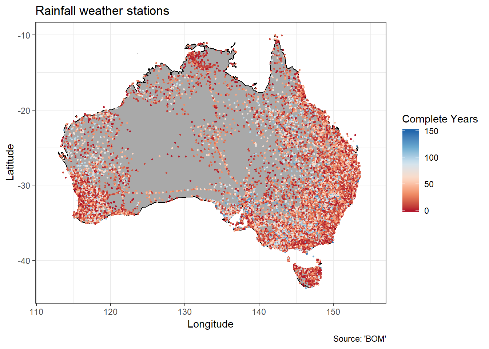
In of itself an interesting plot. You can see heaps of weather stations over Eastern Australian and around Perth but few to none over the deserts. Its probably a really good plot of which parts of Australia are inhabited. You can pick out some important routes like the Overland railway across the Nullabor and the Stuart highway runing from Darwin to Port Augusta.
However it shows a whole bunch of red indicating that many of those stations had only a few years of complete data.
To get good quality data for my analysis I wrote a program that would examine each station individually and then pick out those that had nearly complete records from 1950 onwards. If i tried to go earlier than 1950 then the number of recording stations with complete records drops off rapidly.
The following plot shows those stations and the median annual rainfall recorded by each of those stations during that time period.
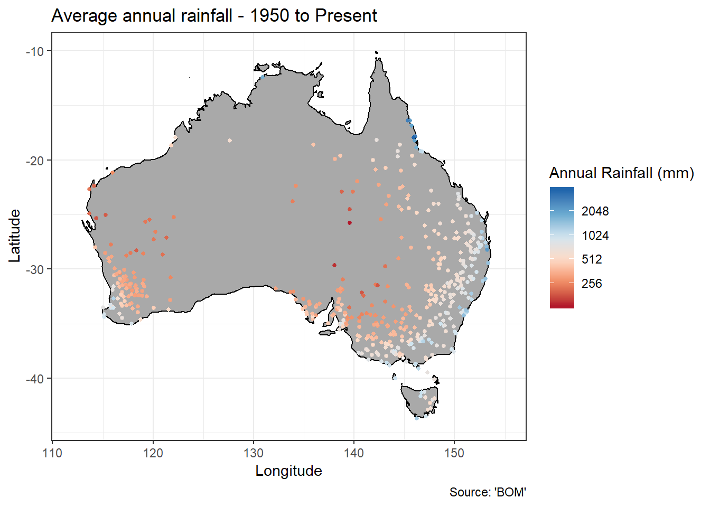
It might look paltry in comparison to the full list but we still end up with 490 weather stations giving us a grand total of 18 million observations.
And the rainfall amounts seem to make sense. You can see the areas with high rainfall areas east of the Great Divide getting drier into Central Australia.
Also this plot really brings home a message. Those dots on the map represent someone who has been consistently recording rainfall observations, almost every day from 1950 onwards. Someone in a local council, a post office employee perhaps, or maybe a farmer. But as the dots go red you get less dots, less people working and living making those observations behind those dots.
Okay now we’ve got some data thats been consistently recorded over a reasonable period of time. And if you recall from my previous article that period of time does cover a consistent increase in temperature across australia.
So now it should be easy to see what happening to the rainfall across Australia. Hah I wish. We don’t have “A land of droughts and flooding rains” in our national anthem for nothing!
Take the Mcleod creek station in Western Australia which has been operating since 1907. (Also notable because it has the lowest station number). During january it typically records a rainfall of 15mm, but its been as low as 1mm and high as 153mm. When you try to graph it you get a crazy mess. The trick I used for the temperature record of comparing the observations with baseline observations on the same day of the year just doesn’t work. Not even trying to compare rainfalls for the same month didn’t work! When it comes to rainfall in Australia, outliers are the norm!
The best way I found to make sense of it was to look at total rainfall for an entire year. This evens out the wild fluctations and also takes care of variation throughout the seasons. I felt it was okay because to some extent we are interested in how much water has piled up in our dams and reservoirs over time.
Then with that in hand you can then get a sense of whether its been dry or wet over the last year by comparing it with other years. I’ve done this to get what I call a Rainfall rating. It varies from -5 to 5 where zero is about average, -5 is same as the driest years and 5 is the same as the wettest years.
With these tools in hand you can map out how rainfall varied from year to year. Like during the droughts in the naughties.
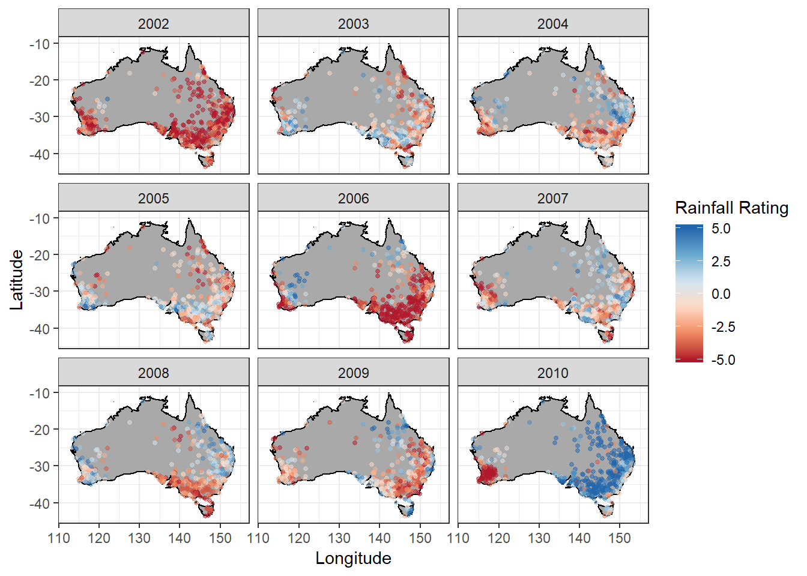
You can see the prolonged period of dry spells that South Eastern Australia experienced during this period. We are only supposed to get that deep red one year in ten but we got it 2 maybe 3. Also you can see when the dry spell broke in 2010.
If you examine these maps you can get a sense that certain stations tend to “go together”. For instance when the drought broke in 2010, with the entirety of Eastern Australia experiencing top levels of rainfall, perth has having a dry spell. If you look closely you can see a band on the southern coast from half way across South Australia right across Victoria that tends to vary together.
It turns out that in order to make sense of how rainfall is changing across Australia you need to find these stations that are “associated”.
To do this I used a machine learning algorithm called “Kmeans”. I used it to group together stations that are “close” to each other. However “closeness” doesn’t have to be defined in terms of physical distance, you can use any set of values you like. In this case I used the annual rainfall for a number of years and the physical distance. The idea was to balance up having similarish annual rainfall, “varying together” and the stations being reasonably close together.
Once we run the algorithm we get this grouping.
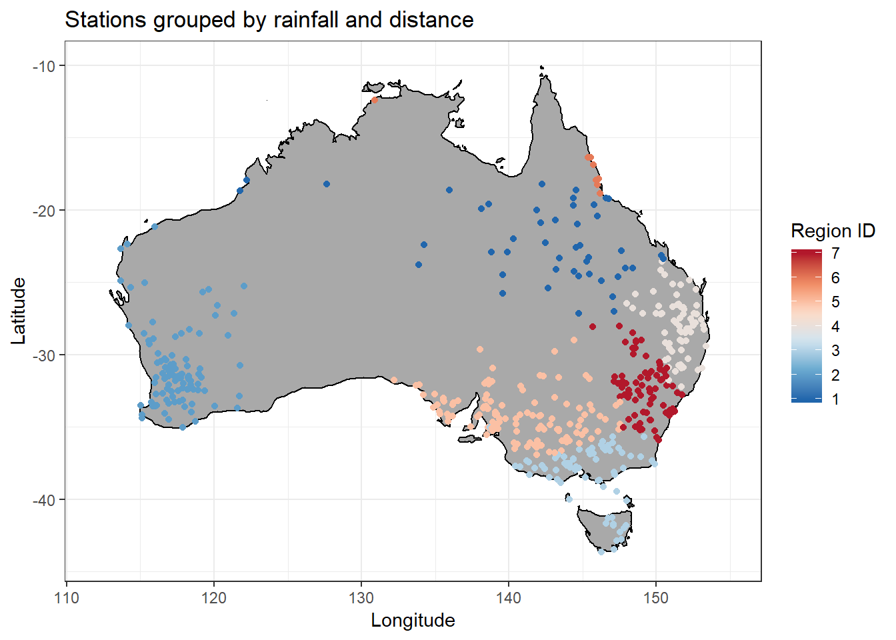
The machine doesn’t know what the regions mean so it just gives each region a number. But we can examine the groupings to see that its picked out areas like Victoria and Tasmania south of the Great Divide, South Australia and Victoria north of the Great Divide, the farming regions in N.S.W., the Outback and so on.
Getting to this stage has taken a lot of work. Much poking around, coding, stats, plotting and rearranging to try and get a clear signal out of those half a billion rows of data spread over 17,000 files.
But after trying a lot of things I think I’ve found a way to show whats going on thats easy to understand.
I’ll break it down for each region from West to East.
Following is the rainfall dashboard for what the machine called region 2.
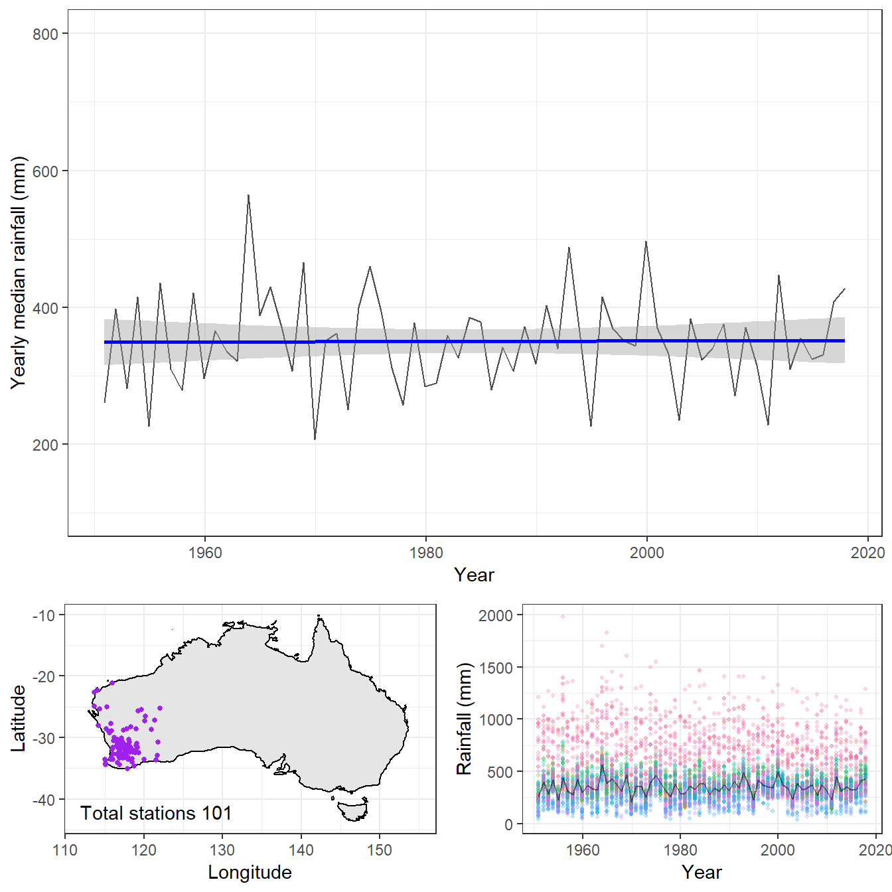
In the bottom left corner you can see the relevant stations It looks like the machine has picked out rainfall stations surrounding Perth in Southern Western Australia.
In the bottom right hand corner is the rainfall for each station with each point being the total rainfall for the year. Each station has its own color which helps give a sense of how all the points are connected. Some stations tend to get lots of rain, some stations not so much.
Next I’ve plotted the median rainfall in black which shows what the “typical” rainfall is for all those stations. Don’t let all the red dots above the black line fool you. Their are an equal number of points below the line as above it but they overlap so much they are hard to see. You can use this plot to get a feeling of how all the individual stations contribute to the median line.
That median line is where all the action is and so it get its own plot on top. Its ups and downs show the “Droughts and flooding rains” that Australians live with.
The blue line is the trend over time and its what we are interested in. Some years dry, some years yet but basically the same year to year.
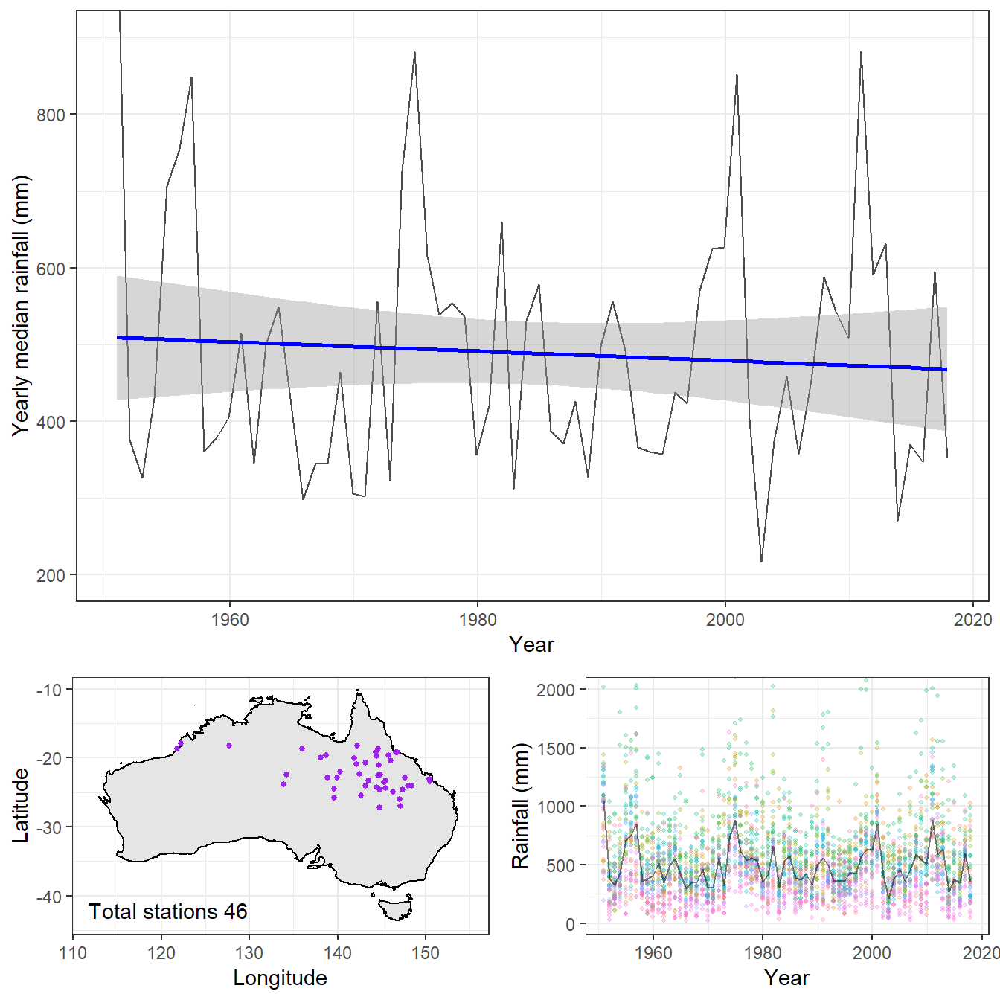
Region 1 is the tropical and sub-tropical regions that form the top end. The rainfall has a really wide range of variation with some stations regularly getting 1500mm and others getting 200-300. However looking at the station graph you can see that the stations tend to vary together which is why the machine grouped them together despite them crossing the entire continent.
The trend line is a little downward but the 95% confidence interval tells us it could quite easily be up or down. The rainfall up here changes so much its hard to tell. Given the lack of any real indication “Not changing” might be wisest.
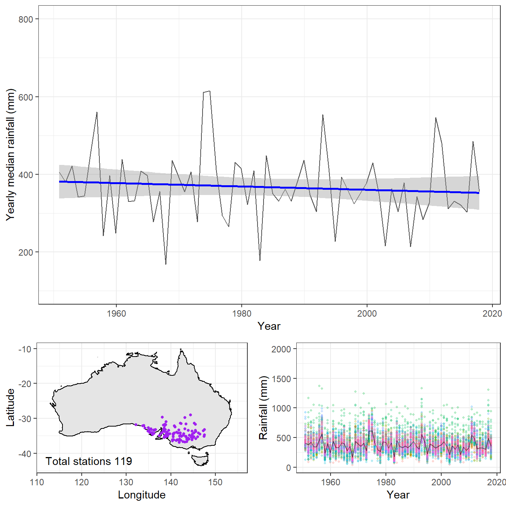
This area covering South Australia and Western Victoria appears to be the region where the trade winds intersect the southerly coastline carrying the rainfall inland until it hits the Great Dividing Range.
There is not nearly as much variation as in the top end with the typical station getting around 400mm a year.
Like the top-end it doesn’t look like there is much of a trend in either direction.
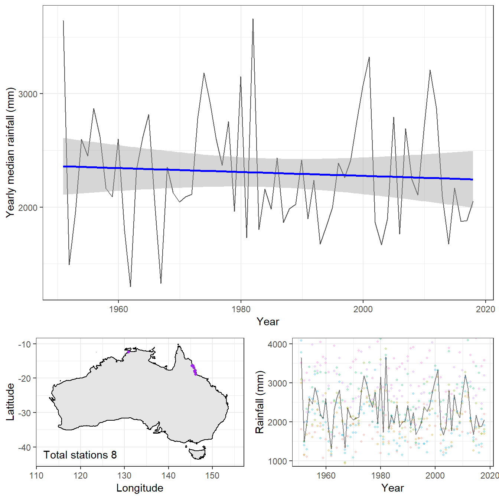
This small collection of stations in Northern Queensland around Cairns gets far more rain than any other region. My guess is that its the stations lying on the Atherton Table Lands. With so few stations and such large variation you don’t get much of a sense of the median line being “typical”. And like the top-end it doesn’t look like we can put much stock in the slight downward trend.
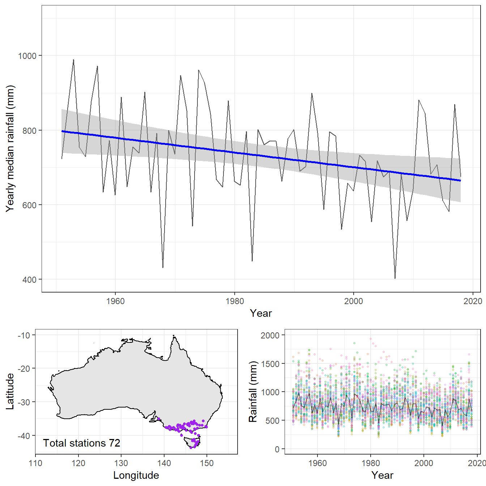
This collection of stations are on my home territory of Southern Victoria and Tasmania. It looks like the rain comes from out over the Southern Ocean until it gets blocked by the Great Dividing Range.
This region shows a very distinct downward trend which we can be quite confident about. From 800mm a year in the 1950’s to maybe 700mm a year now. And while the regions we looked at previously showed distinct “dry stations” and “wet stations” the colors on the station plot are much more of a jumble.
You can clearly see the Millennium drought and how it looks unprecedented compared to earlier droughts.
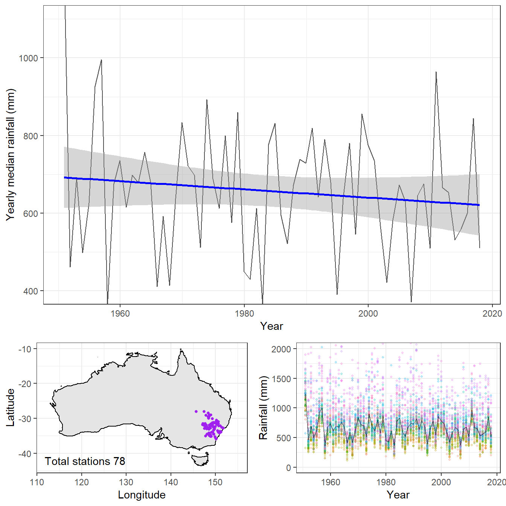
This region seems to cover a lot of the areas currently in drought in New South Wales. Because each point is the prior years data and my data only goes up to 2017 its not really covering the drought. But you can see the start of it at the far right hand side.
This region typically gets about a 1000mm less rain than Southern Victoria.
This region also shows a distinct downward trend, but we can’t be as confident about it as we are with Southern Victoria.
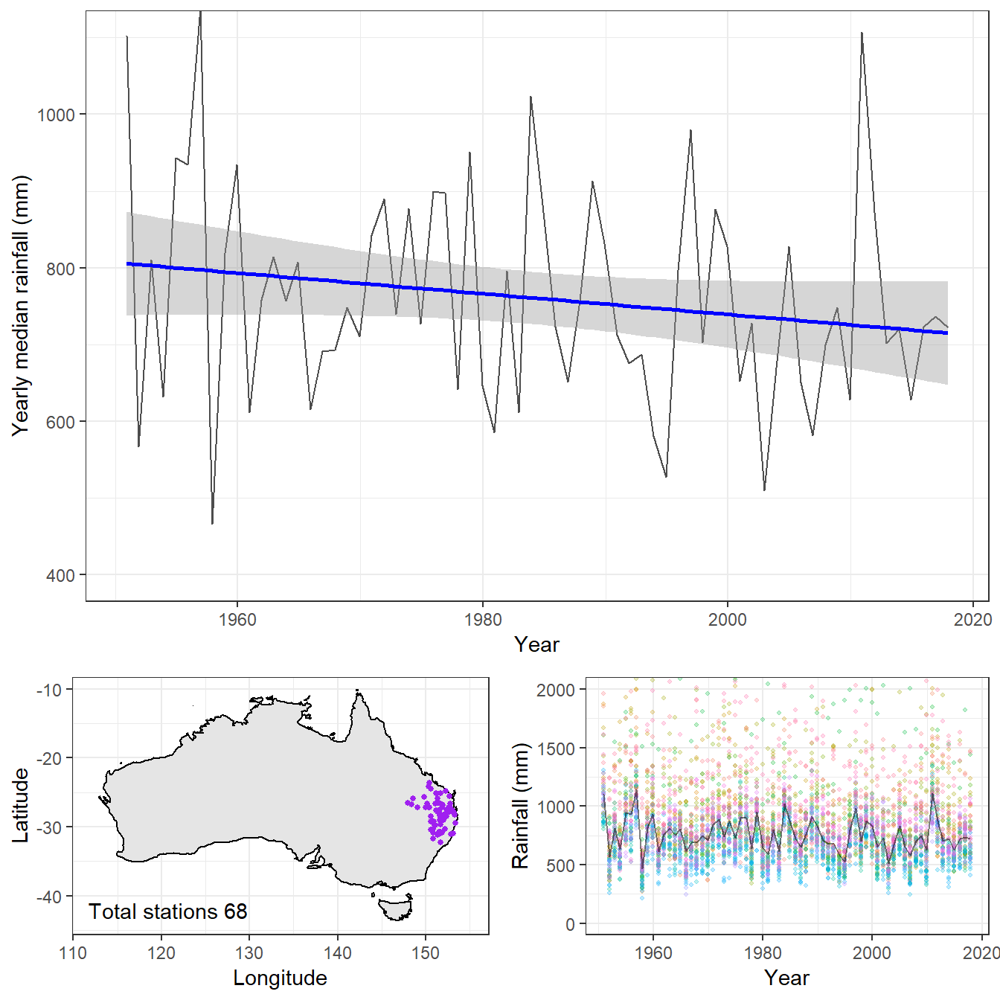
The region in Northern New South Wales and Southern Queensland tends to get a bit more rain than the rest of New South Wales. However it has a distinct downward trend that is at best is just level.
And their we have it. While many areas of Australia don’t seem to be showing much of a change in rainfall, their is good evidence that large areas Eastern Australia are showing a distinct downward trend of which we can be quite certain of in Southern Victoria.
Hopefully this article gives you a sense of how the evidence we have is demonstrating that.
For large areas of Australia we have no evidence at all. But naturally the data shows us the areas that are important to us because they are the areas where people live and farm our food.
Now that I’ve established its likely there is a downward rainfall trend in large parts of Eastern Australia it would be good to get some more certainty around that. I’ve got some ideas and plenty of data to play with.
If you’ve got some suggestions or would like to know whats making it tricky leave me a comment.